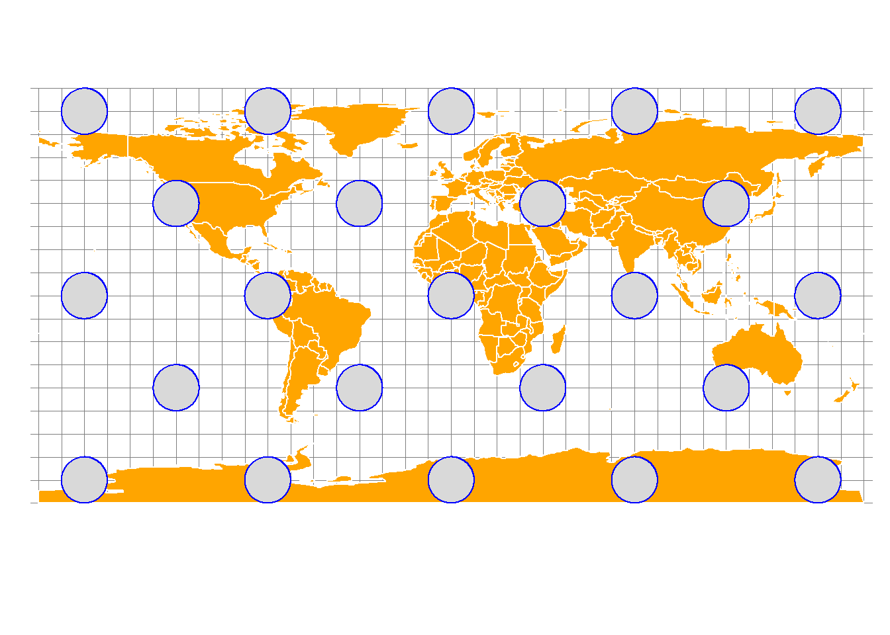
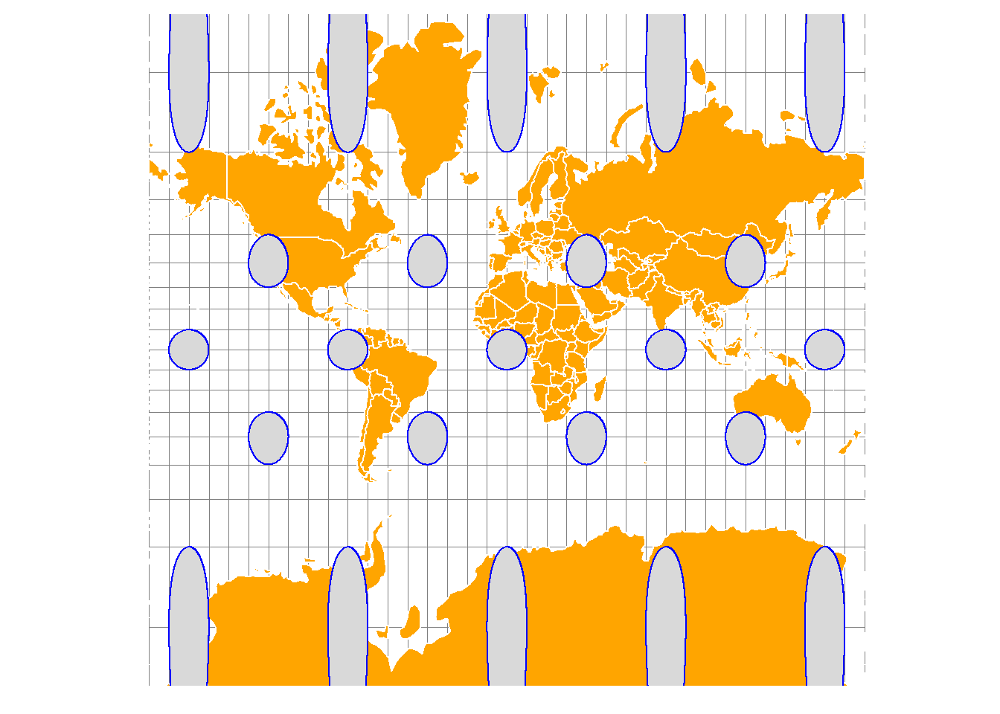
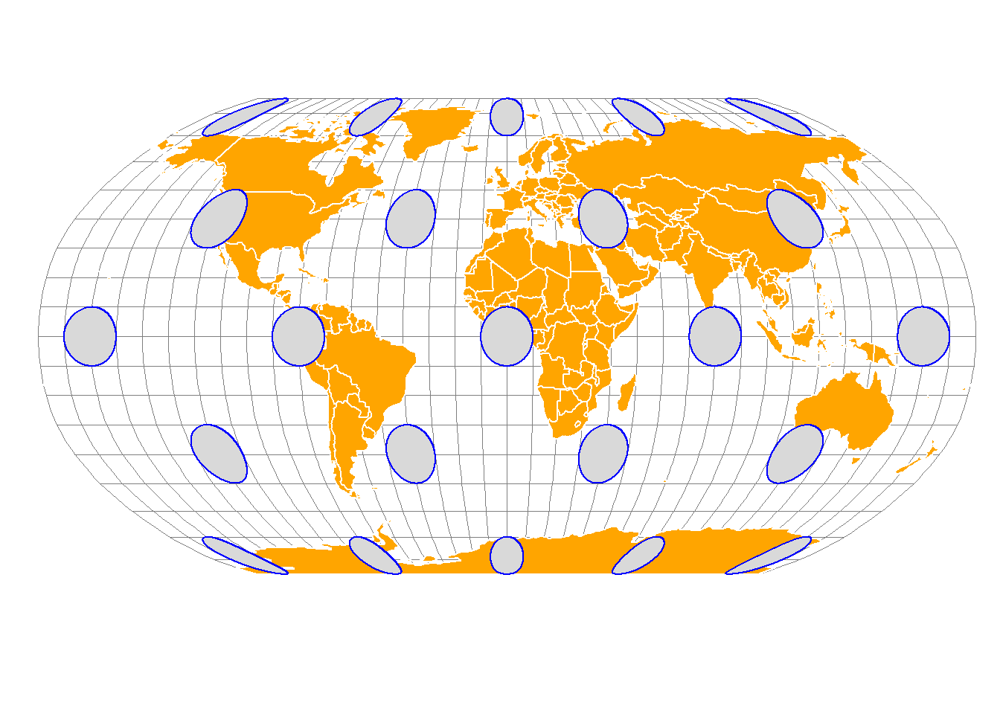
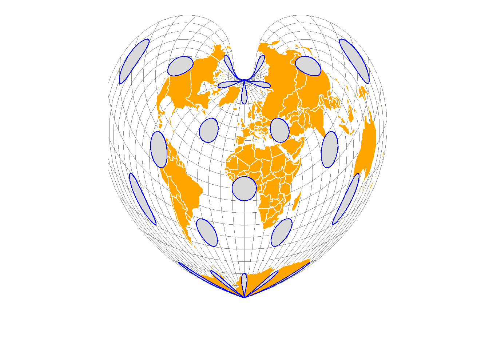
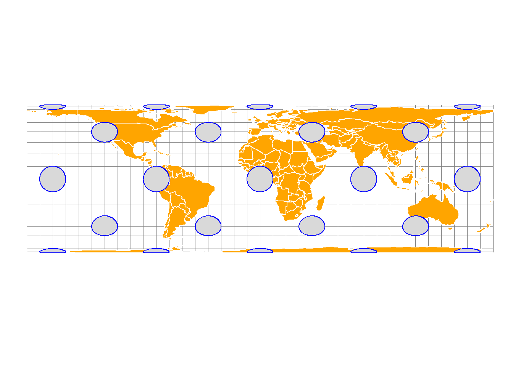
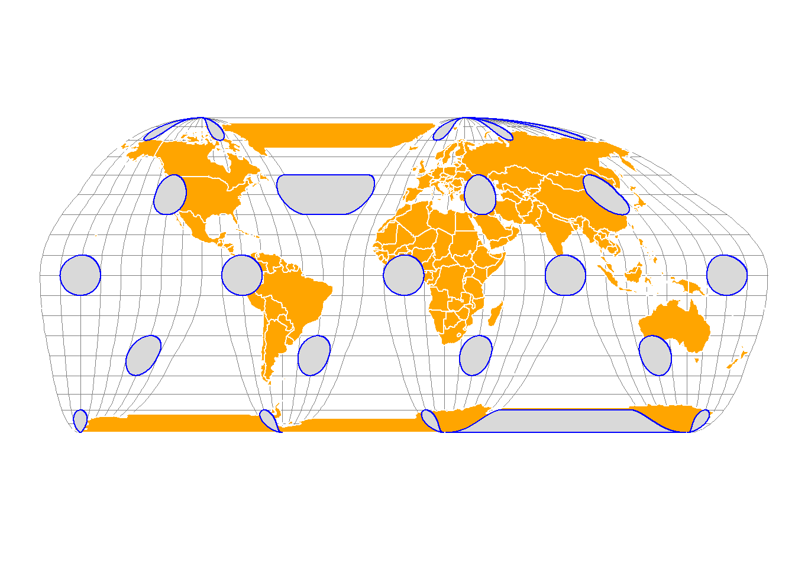
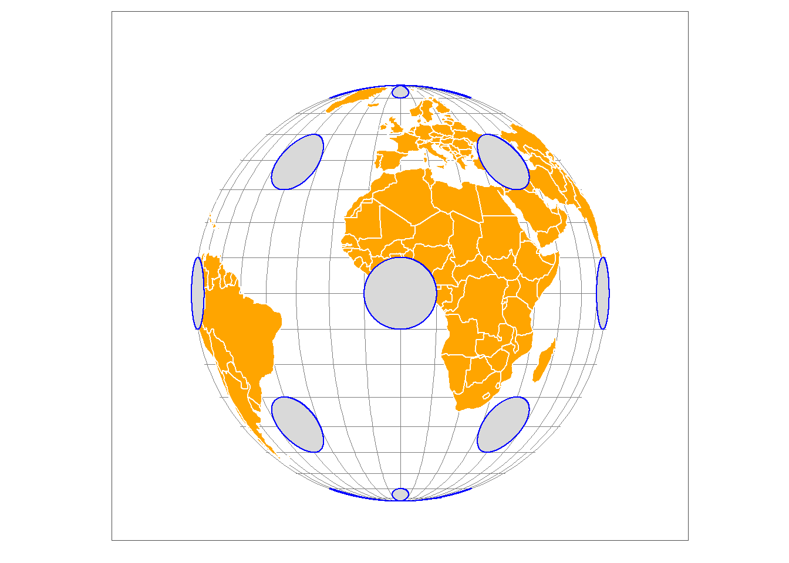
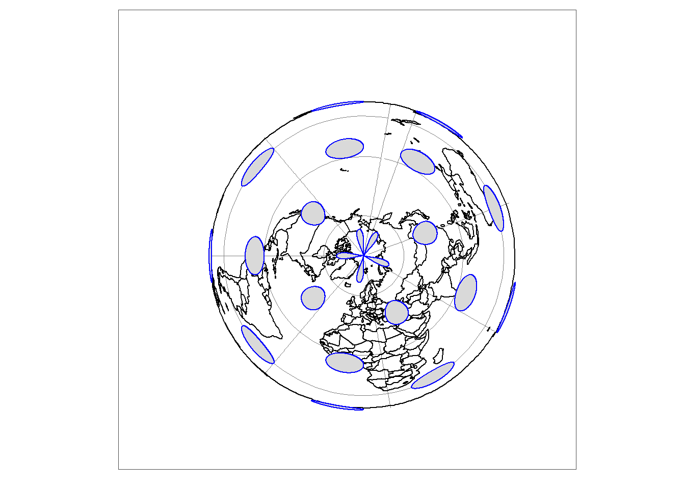
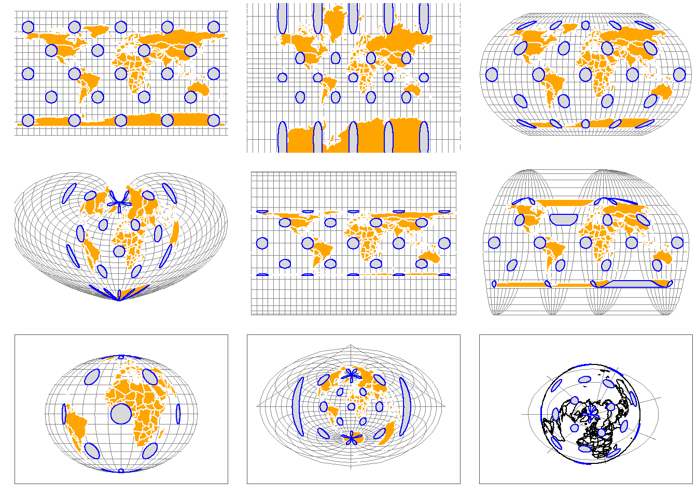

# install.packages(c("sf", "tmap")
# Load libraries
library(sf)
library(tmap)Working with map projections
Map projections are mathematical methods that let us represent the curved surface of the Earth on a flat medium, such as a screen or paper. If you’ve ever created a map, you’ve already used a projection.
Every map introduces some distortion because it’s impossible to flatten a spherical surface without stretching, compressing, or tearing it. Projections manage this distortion in a systematic way, allowing cartographers to decide where and how it occurs.
Overview
In this tutorial, you’ll learn how to:
- Check the current projection of spatial data.
- Transform data to a different projection.
- Visualize maps in different projections (and distortions) using
tmapR package.
We’ll use the sf package for spatial operations and tmap for visualization.
Install and load packages
If you haven’t installed sf and tmap packages, remove the comment # to install the packages. Otherwise, continue to load the packages.
Data
You will use three datasets:
- World data that comes with the
tmappackage. The data shows the world’s continents - Circles data. The circles used to visualize and measure distortion in map projection demonstrations are known as Tissot’s indicatrices.
Check the dataset that comes with tmap package
data(package = "tmap")Load the data
world <- World
circles <- st_read("../assets/data/projections/circles.shp")Reading layer `circles' from data source
`C:\Users\devmbeya\Documents\rforgisrstutorials\assets\data\projections\circles.shp'
using driver `ESRI Shapefile'
Simple feature collection with 23 features and 1 field
Geometry type: POLYGON
Dimension: XY
Bounding box: xmin: -170.0119 ymin: -89.9614 xmax: 170.0438 ymax: 89.99475
Geodetic CRS: WGS 84Check current projection
Use st_crs() to inspect the Coordinate Reference System (CRS):
st_crs(world)Coordinate Reference System:
User input: EPSG:4326
wkt:
GEOGCRS["WGS 84",
ENSEMBLE["World Geodetic System 1984 ensemble",
MEMBER["World Geodetic System 1984 (Transit)"],
MEMBER["World Geodetic System 1984 (G730)"],
MEMBER["World Geodetic System 1984 (G873)"],
MEMBER["World Geodetic System 1984 (G1150)"],
MEMBER["World Geodetic System 1984 (G1674)"],
MEMBER["World Geodetic System 1984 (G1762)"],
MEMBER["World Geodetic System 1984 (G2139)"],
ELLIPSOID["WGS 84",6378137,298.257223563,
LENGTHUNIT["metre",1]],
ENSEMBLEACCURACY[2.0]],
PRIMEM["Greenwich",0,
ANGLEUNIT["degree",0.0174532925199433]],
CS[ellipsoidal,2],
AXIS["geodetic latitude (Lat)",north,
ORDER[1],
ANGLEUNIT["degree",0.0174532925199433]],
AXIS["geodetic longitude (Lon)",east,
ORDER[2],
ANGLEUNIT["degree",0.0174532925199433]],
USAGE[
SCOPE["Horizontal component of 3D system."],
AREA["World."],
BBOX[-90,-180,90,180]],
ID["EPSG",4326]]st_crs(circles)Coordinate Reference System:
User input: WGS 84
wkt:
GEOGCRS["WGS 84",
DATUM["World Geodetic System 1984",
ELLIPSOID["WGS 84",6378137,298.257223563,
LENGTHUNIT["metre",1]]],
PRIMEM["Greenwich",0,
ANGLEUNIT["degree",0.0174532925199433]],
CS[ellipsoidal,2],
AXIS["latitude",north,
ORDER[1],
ANGLEUNIT["degree",0.0174532925199433]],
AXIS["longitude",east,
ORDER[2],
ANGLEUNIT["degree",0.0174532925199433]],
ID["EPSG",4326]]You will notice that this dataset’s Coordinate Reference System is EPSG:4326. This is the global standard geographic coordinate system (CRS) for latitude and longitude, based on the World Geodetic System 1984 (WGS84) datum, often used by GPS and for web maps like OpenStreetMap, representing Earth’s surface as degrees. It defines locations with (Latitude, Longitude) pairs, unlike other systems that use meters. This dataset is not projected.
Visualise unprojected data
unprojected_earth <- tm_graticules(x = seq(-180, 180, 10),
y = seq(-90, 90, 10),
labels.show = FALSE,
col = "grey50",
lwd = 0.6) +
tm_shape(world) +
tm_polygons(col = "white", fill = "orange") +
tm_shape(circles) +
tm_polygons(col = "blue") +
tm_layout(frame=FALSE,
inner.margins = c(0.14, 0.01, 0.1, 0.01)) # Visualise
unprojected_earth
This coordinate reference system though heavily distorts shapes near the poles when flattened.
Transform Projection
To transform the dataset’s projection to another projection, use st_transform(). Map projections can be specified using their EPSG codes (https://epsg.io) or their PROJ strings (https://proj-tmp.readthedocs.io/en/6.2/usage/quickstart.html).
Web Mercator map projection
For example, convert to WGS84 (EPSG:4326) and Web Mercator (EPSG:3857):
world_wm <- st_transform(world, 3857)
circles_wm <- st_transform(circles, 3857)Visualise web mercator projection
web_mercator <- tm_graticules(x = seq(-180, 180, 10),
y = seq(-90, 90, 10),
labels.show = FALSE,
col = "grey50",
lwd = 0.6) +
tm_shape(world_wm) +
tm_polygons(col = "white", fill = "orange") +
tm_shape(circles_wm) +
tm_polygons(col = "blue") +
tm_layout(frame=FALSE,
inner.margins = c(0.14, 0.01, 0.1, 0.01)) # Plot the map
web_mercator
The Web Mercator / Pseudo Mercator projection is a cylindrical map projection. The projection extremely distorts shapes at higher latitudes; areas near the poles are vastly exaggerated. This is a standard projection for web maps such as Google maps and Bing maps.
Compare the map with the one for the unprojected dataset. Compare the sizes of Greenland and Africa on both maps.
Robinson map projection
Robinson map projection (ESRI:53030) is a compromise projection. It doesn’t perfectly preserve area, shape, or distance but minimizes overall visual error.
world_rob <- st_transform(world, "ESRI:53030")
circles_rob <- st_transform(circles, "ESRI:53030")Visualise Robinson projection
robinson <- tm_graticules(x = seq(-180, 180, 10),
y = seq(-90, 90, 10),
labels.show = FALSE,
col = "grey50",
lwd = 0.6) +
tm_shape(world_rob) +
tm_polygons(col = "white", fill = "orange") +
tm_shape(circles_rob) +
tm_polygons(col = "blue") +
tm_layout(frame=FALSE,
inner.margins = c(0.14, 0.01, 0.1, 0.01)) # Plot the map
robinson
Bonne map projection
The Bonne projection (ESRI:54024) is a classic pseudoconical, equal-area map projection, known for its heart-shaped appearance and used for mapping continents like Asia or Europe, featuring true scale along its central meridian and standard parallel, but distorting shapes and distances away from them, making it ideal for single-hemisphere or T-shaped regions.
world_bon <- st_transform(world, "ESRI:54024")
circles_bon <- st_transform(circles, "ESRI:54024")Visualise Bonne projection
bonne <- tm_graticules(x = seq(-180, 180, 10),
y = seq(-90, 90, 10),
labels.show = FALSE,
col = "grey50",
lwd = 0.6) +
tm_shape(world_bon) +
tm_polygons(col = "white", fill = "orange") +
tm_shape(circles_bon) +
tm_polygons(col = "blue") +
tm_layout(frame=FALSE,
inner.margins = c(0.14, 0.01, 0.1, 0.01)) # Visualise the map
bonne
Equal Area Cyrindricall projection
Cylindrical equal area is an equal-area (equivalent) projection. It presents the world as a rectangle while maintaining relative areas on a map.
cea <- "+proj=cea"
world_cea <- st_transform(world, crs = cea)
circles_cea <- st_transform(circles, crs = cea)Visualise Equal Area projection
equal_area_cyrindrical <- tm_graticules(x = seq(-180, 180, 10),
y = seq(-90, 90, 10),
labels.show = FALSE,
col = "grey50",
lwd = 0.6) +
tm_shape(world_cea) +
tm_polygons(col = "white", fill = "orange") +
tm_shape(circles_cea) +
tm_polygons(col = "blue") +
tm_layout(frame=FALSE)# Plot the map
equal_area_cyrindrical
The scale is correct along the standard parallels. Shape, scale, direction, angle, and distance distortion increase with the distance from the standard parallels. Shapes are distorted north-south between the standard parallels (if the equator is not used as the standard parallel) and east-west above the standard parallels. The distortion values are severe near the poles and symmetric across the equator and the central meridian.
Goode Homolisine
The Goode homolosine projection (or interrupted Goode homolosine projection) is a pseudocylindrical, equal-area, composite map projection used for world maps.
world_goode <- st_transform(world, "ESRI:54052")
circles_goode <- st_transform(circles, "ESRI:54052")goode_projection <- tm_graticules(x = seq(-180, 180, 10),
y = seq(-90, 90, 10),
labels.show = FALSE,
col = "grey50",
lwd = 0.6) +
tm_shape(world_goode) +
tm_polygons(col = "white", fill = "orange") +
tm_shape(circles_goode) +
tm_polygons(col = "blue") +
tm_layout(frame=FALSE)# Plot the map
goode_projection
Orthographic projection
The orthographic projection(EPSG:9840) is a perspective azimuthal projection centered around a given latitude and longitude.
ortho_crs <- "+proj=ortho"
world_ortho <- st_transform(world, crs=ortho_crs)
circles_ortho <- st_transform(circles, ortho_crs)orthographic <- tm_graticules(x = seq(-180, 180, 10),
y = seq(-90, 90, 10),
labels.show = FALSE,
col = "grey50",
lwd = 0.6) +
tm_shape(world_ortho) +
tm_polygons(col = "white", fill = "orange") +
tm_shape(circles_ortho) +
tm_polygons(col = "blue") +
tm_layout(frame.r = 0,
frame.lwd = 0,
frame.color ="grey30",
inner.margins = c(0.2, 0.2, 0.2, 0.2)) # Plot the map
orthographic
In orthographic projection, shape and area are distorted, especially away from the center, with extreme distortion at the edge.
Azimuthal Equidistance
The Azimuthal Equidistant projection is a map projection that represents the Earth on a flat surface, preserving accurate distances and directions from one central point.
aeqd <- "+proj=aeqd"
world_aeqd <- st_transform(world, aeqd)
circles_aeqd <- st_transform(circles, aeqd)azimuthal_equidistant <- tm_graticules(x = seq(-180, 180, 10),
y = seq(-90, 90, 10),
labels.show = FALSE,
col = "grey50",
lwd = 0.6) +
tm_shape(world_aeqd) +
tm_polygons(col = "white", fill = "orange") +
tm_shape(circles_aeqd) +
tm_polygons(col = "blue") +
tm_layout(frame.r = 0,
frame.lwd = 0,
frame.color ="grey30",
inner.margins = c(0.2, 0.3, 0.3, 0.2)) # Plot the map
azimuthal_equidistant
Polar Lambert Azimuthal Projection
The Polar Lambert Azimuthal Projection has a polar aspect equal-area projection. Polar Lambert Azimuthal equal-area projection for the north pole (EPSG:3575).
world_pla <- st_transform(world, 3575 )
circles_pla<- st_transform(circles, 3575)polar_lambert <- tm_graticules(x = seq(-180, 180, 50),
y = seq(-90, 90, 50),
labels.show = FALSE,
col = "grey50",
lwd = 0.6) +
tm_shape(world_pla) +
tm_borders(col = "black") +
tm_shape(circles_pla) +
tm_polygons(col = "blue") +
tm_layout(frame.r = 0,
frame.lwd = 0,
frame.color ="grey30",
inner.margins = c(0.2, 0.3, 0.3, 0.2)) # Plot the map
polar_lambert
Compare projections
tmap_arrange(unprojected_earth, web_mercator, robinson, bonne, equal_area_cyrindrical, goode_projection, orthographic, azimuthal_equidistant, polar_lambert, ncol = 3)
Assigning Map projection
When the data set is missing a projection, we can assign it using the st_set_crs() function.
# dataset <- st_set_crs(dataset, "EPSG:32726")When to reproject?
- For analysis: Use a projection suitable for distance/area calculations (e.g., UTM).
- For visualization: Web Mercator (EPSG:3857) is common for web maps.
References
- PROJ contributors (2019). PROJ coordinate transformation software library. Open Source Geospatial Foundation. URL https://proj.org/.
- MapTiler. https://epsg.io/